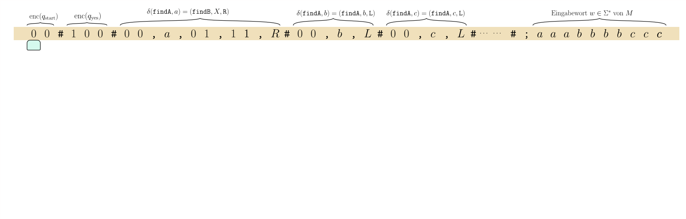
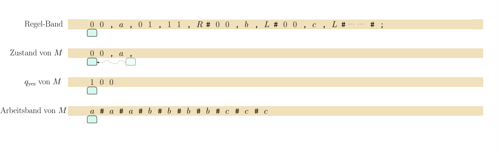
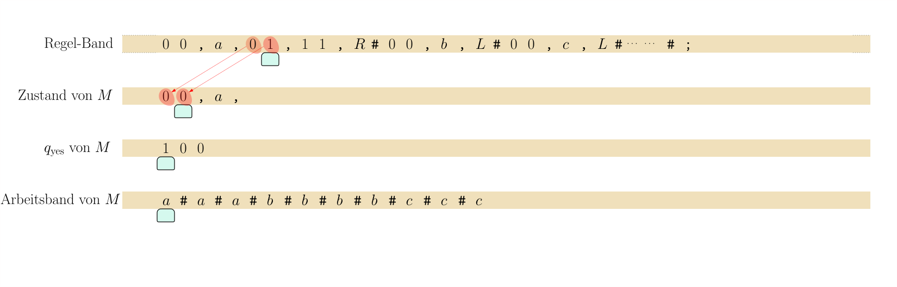
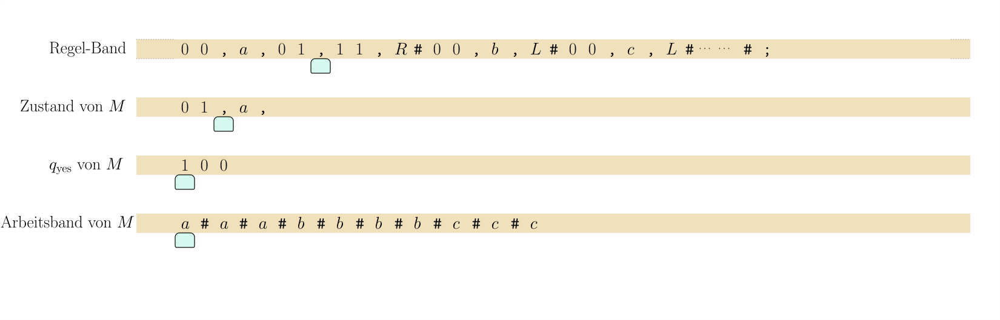
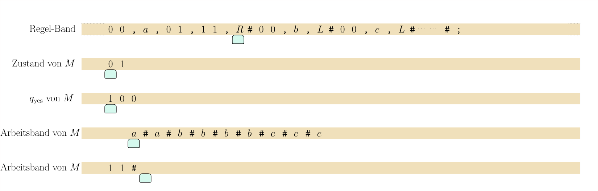
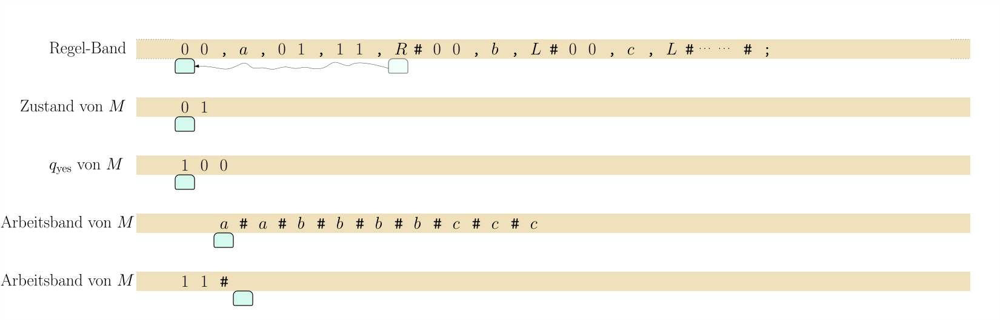

8.5 Turing-Maschinen simulieren Turing-Maschinen: die universelle Turing-Maschine./wly/08/05-Turing-universal.wly:2:11
Im letzten Teilkapitel haben wir gesehen, wie wir./wly/08/05-Turing-universal.wly:5:5 jede Turingmaschine ./wly/08/05-Turing-universal.wly:6:5$M$./wly/08/05-Turing-universal.wly:6:25 mit Eingabealphabet ./wly/08/05-Turing-universal.wly:6:28$\Sigma$./wly/08/05-Turing-universal.wly:6:49 ./wly/08/05-Turing-universal.wly:6:57 codieren können als./wly/08/05-Turing-universal.wly:7:5
$$
\begin{align*}
\enc(M) \in \Lambda^* \ ,
\end{align*}
$$./wly/08/05-Turing-universal.wly:9:5
also als String über dem Codierungsalphabet./wly/08/05-Turing-universal.wly:13:5
$$
\begin{align*}
\Lambda := \writelambda
\end{align*}
$$./wly/08/05-Turing-universal.wly:15:5
Diese Codierungsschema enthält implizit./wly/08/05-Turing-universal.wly:19:5 Codierungsfunktionen./wly/08/05-Turing-universal.wly:20:5 ./wly/08/05-Turing-universal.wly:21:5$\enc_Q : Q \rightarrow \{0,1\}^+$./wly/08/05-Turing-universal.wly:21:5 und./wly/08/05-Turing-universal.wly:21:39 ./wly/08/05-Turing-universal.wly:22:5$\enc_\Gamma: \Gamma \rightarrow \Sigma \cup \{0,1\}^+$./wly/08/05-Turing-universal.wly:22:5,./wly/08/05-Turing-universal.wly:23:15 ./wly/08/05-Turing-universal.wly:23:15 die wir verwenden, um die Zustände und Arbeitszeichen./wly/08/05-Turing-universal.wly:24:5 von ./wly/08/05-Turing-universal.wly:25:5$M$./wly/08/05-Turing-universal.wly:25:9 in ./wly/08/05-Turing-universal.wly:25:12$\Lambda$./wly/08/05-Turing-universal.wly:25:16 -Zeichen zu übersetzen. Für eine./wly/08/05-Turing-universal.wly:25:25 Konfiguration./wly/08/05-Turing-universal.wly:26:5
$$
\begin{align*}
C = u_1 \dots u_m q v_1 \dots v_n
\end{align*}
$$./wly/08/05-Turing-universal.wly:28:5
der Maschine ./wly/08/05-Turing-universal.wly:32:5$M$./wly/08/05-Turing-universal.wly:32:18 definieren wir die Codierung von ./wly/08/05-Turing-universal.wly:32:21$C$./wly/08/05-Turing-universal.wly:32:55 ./wly/08/05-Turing-universal.wly:32:58 als./wly/08/05-Turing-universal.wly:33:5
$$
\begin{align*}
\enc(C) := \enc_\Gamma(u_1) \texttt{#} \enc_\Gamma(u_2) \dots \texttt{#}
\enc_\Gamma(u_m)\texttt{#}
\enc_Q(q) \texttt{#} \enc_\Gamma(v_1)\texttt{#} \dots \texttt{#}
\enc_\Gamma(v_n) \in \Lambda^* \ .
\end{align*}
$$./wly/08/05-Turing-universal.wly:35:5
Das ist alles nicht besonders tiefgründig und dient./wly/08/05-Turing-universal.wly:42:5 allein dazu, sicherzustellen, dass wir die./wly/08/05-Turing-universal.wly:43:5 Konfigurationen von ./wly/08/05-Turing-universal.wly:44:5$M$./wly/08/05-Turing-universal.wly:44:25 darstellen können in dem./wly/08/05-Turing-universal.wly:44:28 Alphabet ./wly/08/05-Turing-universal.wly:45:5$\Lambda$./wly/08/05-Turing-universal.wly:45:14,./wly/08/05-Turing-universal.wly:45:23 das ./wly/08/05-Turing-universal.wly:45:23unabhängig./wly/08/05-Turing-universal.wly:45:30 von ./wly/08/05-Turing-universal.wly:45:41$M$./wly/08/05-Turing-universal.wly:45:46 ist../wly/08/05-Turing-universal.wly:45:49 Dass wir also ./wly/08/05-Turing-universal.wly:46:5jede./wly/08/05-Turing-universal.wly:46:20 Turingmaschine ./wly/08/05-Turing-universal.wly:46:25$M$./wly/08/05-Turing-universal.wly:46:41 mit./wly/08/05-Turing-universal.wly:46:44 Eingabealphabet ./wly/08/05-Turing-universal.wly:47:5$\Sigma$./wly/08/05-Turing-universal.wly:47:21 und ./wly/08/05-Turing-universal.wly:47:29jede./wly/08/05-Turing-universal.wly:47:35 ihrer./wly/08/05-Turing-universal.wly:47:40 Konfigurationen als Strings über ./wly/08/05-Turing-universal.wly:48:5einem./wly/08/05-Turing-universal.wly:48:39 festen./wly/08/05-Turing-universal.wly:48:45 Alphabet ./wly/08/05-Turing-universal.wly:49:5$\Lambda$./wly/08/05-Turing-universal.wly:49:14 darstellen können. Eine./wly/08/05-Turing-universal.wly:49:23 Turingmaschine simulieren heißt nun, einen String./wly/08/05-Turing-universal.wly:50:5 ./wly/08/05-Turing-universal.wly:51:5$\enc(M)\texttt{;}w$./wly/08/05-Turing-universal.wly:51:5 mit ./wly/08/05-Turing-universal.wly:51:25$w \in \Sigma^*$./wly/08/05-Turing-universal.wly:51:30 zu lesen./wly/08/05-Turing-universal.wly:51:46 und daraus den String ./wly/08/05-Turing-universal.wly:52:5$\enc(\hat{\delta}^*_M (w))$./wly/08/05-Turing-universal.wly:52:27 zu./wly/08/05-Turing-universal.wly:52:55 berechnen, also das Ergebnis ./wly/08/05-Turing-universal.wly:53:5$\hat{\delta}^*_M(w)$./wly/08/05-Turing-universal.wly:53:34,./wly/08/05-Turing-universal.wly:53:55 ./wly/08/05-Turing-universal.wly:53:55 passend codiert über dem Alphabet ./wly/08/05-Turing-universal.wly:54:5$\Lambda$./wly/08/05-Turing-universal.wly:54:39../wly/08/05-Turing-universal.wly:54:48 Das./wly/08/05-Turing-universal.wly:54:48 zentrale Ergebnis dieses Teilkapitels ist, dass wir./wly/08/05-Turing-universal.wly:55:5 diese Simulation selbst mit einer Turingmaschine./wly/08/05-Turing-universal.wly:56:5 implementieren können../wly/08/05-Turing-universal.wly:57:5
Theorem 8.5.1 (Universelle Turingmaschine)../wly/08/05-Turing-universal.wly:59:5 Zu jedem endlichen./wly/08/05-Turing-universal.wly:61:40 Eingabealphabet ./wly/08/05-Turing-universal.wly:62:9$\Sigma$./wly/08/05-Turing-universal.wly:62:25 sei ./wly/08/05-Turing-universal.wly:62:33$\Lambda := \writelambda$./wly/08/05-Turing-universal.wly:62:38 ./wly/08/05-Turing-universal.wly:62:63 das Codierungsalphabet. Es gibt es eine Turingmaschine./wly/08/05-Turing-universal.wly:63:9 ./wly/08/05-Turing-universal.wly:64:9$U = U_{\Sigma}$./wly/08/05-Turing-universal.wly:64:9 mit Eingabealphabet ./wly/08/05-Turing-universal.wly:64:25$\Lambda$./wly/08/05-Turing-universal.wly:64:46,./wly/08/05-Turing-universal.wly:64:55 so./wly/08/05-Turing-universal.wly:64:55 dass für alle ./wly/08/05-Turing-universal.wly:65:9$c \in \Lambda^*$./wly/08/05-Turing-universal.wly:65:23 und ./wly/08/05-Turing-universal.wly:65:40$w \in \Sigma^*$./wly/08/05-Turing-universal.wly:65:45 ./wly/08/05-Turing-universal.wly:65:61 die Turingmaschine ./wly/08/05-Turing-universal.wly:66:9$U$./wly/08/05-Turing-universal.wly:66:28 mit Eingabewort./wly/08/05-Turing-universal.wly:66:31 ./wly/08/05-Turing-universal.wly:67:9$x \in \Lambda^*$./wly/08/05-Turing-universal.wly:67:9 folgendes tut:./wly/08/05-Turing-universal.wly:67:26
-
Falls ./wly/08/05-Turing-universal.wly:71:17$x$./wly/08/05-Turing-universal.wly:71:23 nicht die Form ./wly/08/05-Turing-universal.wly:71:26$\enc(M) w$./wly/08/05-Turing-universal.wly:71:42 mit./wly/08/05-Turing-universal.wly:71:53 ./wly/08/05-Turing-universal.wly:72:17$w \in \Sigma^*$./wly/08/05-Turing-universal.wly:72:17 hat, lehnt sie ab;./wly/08/05-Turing-universal.wly:72:33
-
Ansonsten, falls also ./wly/08/05-Turing-universal.wly:75:17$x = \enc(M)w$./wly/08/05-Turing-universal.wly:75:39 für eine./wly/08/05-Turing-universal.wly:75:53 Turingmaschine ./wly/08/05-Turing-universal.wly:76:17$M$./wly/08/05-Turing-universal.wly:76:32 und ein Wort ./wly/08/05-Turing-universal.wly:76:35$w \in \Sigma^*$./wly/08/05-Turing-universal.wly:76:49 ist:./wly/08/05-Turing-universal.wly:76:65
-
Falls ./wly/08/05-Turing-universal.wly:80:25$M$./wly/08/05-Turing-universal.wly:80:31 mit Eingabewort ./wly/08/05-Turing-universal.wly:80:34$w$./wly/08/05-Turing-universal.wly:80:51 nicht terminiert, dann./wly/08/05-Turing-universal.wly:80:54 terminiert ./wly/08/05-Turing-universal.wly:81:25$U$./wly/08/05-Turing-universal.wly:81:36 mit Eingabewort ./wly/08/05-Turing-universal.wly:81:39$x$./wly/08/05-Turing-universal.wly:81:56 auch nicht../wly/08/05-Turing-universal.wly:81:59
-
Falls ./wly/08/05-Turing-universal.wly:84:25$M$./wly/08/05-Turing-universal.wly:84:31 mit Eingabewort ./wly/08/05-Turing-universal.wly:84:34$w$./wly/08/05-Turing-universal.wly:84:51 eine Endkonfiguration./wly/08/05-Turing-universal.wly:84:54 ./wly/08/05-Turing-universal.wly:85:25$C = uqv$./wly/08/05-Turing-universal.wly:85:25 erreicht, dann erreicht ./wly/08/05-Turing-universal.wly:85:34$U$./wly/08/05-Turing-universal.wly:85:59 mit Eingabewort./wly/08/05-Turing-universal.wly:85:62 ./wly/08/05-Turing-universal.wly:86:25$x$./wly/08/05-Turing-universal.wly:86:25 die Endkonfiguration ./wly/08/05-Turing-universal.wly:86:28$q\ \enc(C)$./wly/08/05-Turing-universal.wly:86:50../wly/08/05-Turing-universal.wly:86:62 Das heißt./wly/08/05-Turing-universal.wly:86:62 insbesondere, dass ./wly/08/05-Turing-universal.wly:87:25$U$./wly/08/05-Turing-universal.wly:87:44 genau dann akzeptiert, wenn ./wly/08/05-Turing-universal.wly:87:47$M$./wly/08/05-Turing-universal.wly:87:76 ./wly/08/05-Turing-universal.wly:87:79 akzeptiert, und genau dann ablehnt, wenn ./wly/08/05-Turing-universal.wly:88:25$M$./wly/08/05-Turing-universal.wly:88:66 ablehnt../wly/08/05-Turing-universal.wly:88:69
-
$U$./wly/08/05-Turing-universal.wly:90:9 akzeptiert also die Sprache./wly/08/05-Turing-universal.wly:90:12
$$
\begin{align*}
\{ c w \ | \ w \in \Sigma^* \textnormal{ und } c = \enc(M) \textnormal{
und $M$ akzeptiert $w$} \} \ .
\end{align*}
$$./wly/08/05-Turing-universal.wly:92:9
Ein technischer aber letztendlich irrelevanter./wly/08/05-Turing-universal.wly:99:10 Punkt:./wly/08/05-Turing-universal.wly:100:9 die Mengen ./wly/08/05-Turing-universal.wly:100:16$Q$./wly/08/05-Turing-universal.wly:100:28 und ./wly/08/05-Turing-universal.wly:100:31$\Gamma$./wly/08/05-Turing-universal.wly:100:36 der./wly/08/05-Turing-universal.wly:100:44 Turingmaschine ./wly/08/05-Turing-universal.wly:101:9$M$./wly/08/05-Turing-universal.wly:101:24 können ja beliebige (endliche)./wly/08/05-Turing-universal.wly:101:27 Mengen sein, und weder ./wly/08/05-Turing-universal.wly:102:9$\Lambda$./wly/08/05-Turing-universal.wly:102:32 noch die./wly/08/05-Turing-universal.wly:102:41 Turingmaschine ./wly/08/05-Turing-universal.wly:103:9$U$./wly/08/05-Turing-universal.wly:103:24 haben "Kenntnis" von ihnen. Wir./wly/08/05-Turing-universal.wly:103:27 nehmen aber aus Gründen der Einfachheit an, dass ./wly/08/05-Turing-universal.wly:104:9$Q$./wly/08/05-Turing-universal.wly:104:58 ./wly/08/05-Turing-universal.wly:104:61 immer die Zustände ./wly/08/05-Turing-universal.wly:105:9$\qaccept$./wly/08/05-Turing-universal.wly:105:28 und ./wly/08/05-Turing-universal.wly:105:38$\qreject$./wly/08/05-Turing-universal.wly:105:43 enthält./wly/08/05-Turing-universal.wly:105:53 und auch ./wly/08/05-Turing-universal.wly:106:9$U$./wly/08/05-Turing-universal.wly:106:18 diese Zustände verwendet. Daraus ergibt./wly/08/05-Turing-universal.wly:106:21 sich, dass für eine Endkonfiguration ./wly/08/05-Turing-universal.wly:107:9$uqv$./wly/08/05-Turing-universal.wly:107:46 von ./wly/08/05-Turing-universal.wly:107:51$M$./wly/08/05-Turing-universal.wly:107:56 ./wly/08/05-Turing-universal.wly:107:59 zwar ./wly/08/05-Turing-universal.wly:108:9$q \in \{\qaccept, \qreject\}$./wly/08/05-Turing-universal.wly:108:14 gilt, allerdings./wly/08/05-Turing-universal.wly:108:44 ./wly/08/05-Turing-universal.wly:109:9$\enc(q) \in \{0,1\}^+$./wly/08/05-Turing-universal.wly:109:9,./wly/08/05-Turing-universal.wly:109:32 da wir diese ./wly/08/05-Turing-universal.wly:109:32$M$./wly/08/05-Turing-universal.wly:109:47 -Zustände./wly/08/05-Turing-universal.wly:109:50 binär codieren. Somit ist./wly/08/05-Turing-universal.wly:110:9 ./wly/08/05-Turing-universal.wly:111:9$q\ \enc(uqv) \in \{\qaccept, \qreject\} \times \Lambda^*$./wly/08/05-Turing-universal.wly:111:9 ./wly/08/05-Turing-universal.wly:112:19 eine Endkonfiguration von ./wly/08/05-Turing-universal.wly:113:9$U$./wly/08/05-Turing-universal.wly:113:35../wly/08/05-Turing-universal.wly:113:38 Des weiteren gehen wir./wly/08/05-Turing-universal.wly:113:38 davon aus, dass das Blank-Symbol ./wly/08/05-Turing-universal.wly:114:9$\Box$./wly/08/05-Turing-universal.wly:114:42 für alle./wly/08/05-Turing-universal.wly:114:48 Turingmaschinen ./wly/08/05-Turing-universal.wly:115:9$M$./wly/08/05-Turing-universal.wly:115:25 mit Eingabealphabet ./wly/08/05-Turing-universal.wly:115:28$\Sigma$./wly/08/05-Turing-universal.wly:115:49 das./wly/08/05-Turing-universal.wly:115:57 gleiche ist. Auch ./wly/08/05-Turing-universal.wly:116:9$U$./wly/08/05-Turing-universal.wly:116:27 verwendet es. Wenn wir./wly/08/05-Turing-universal.wly:116:30 allerdings ./wly/08/05-Turing-universal.wly:117:9$M$./wly/08/05-Turing-universal.wly:117:20 codieren, so wird auch ./wly/08/05-Turing-universal.wly:117:23$\Box$./wly/08/05-Turing-universal.wly:117:47 als./wly/08/05-Turing-universal.wly:117:53 ./wly/08/05-Turing-universal.wly:118:9$\enc(\Box) \in \{0,1\}^+$./wly/08/05-Turing-universal.wly:118:9 codiert, wie jedes./wly/08/05-Turing-universal.wly:118:35 Arbeitssymbol ./wly/08/05-Turing-universal.wly:119:9$z \in \Gamma \setminus \Sigma$./wly/08/05-Turing-universal.wly:119:23 von ./wly/08/05-Turing-universal.wly:119:54$M$./wly/08/05-Turing-universal.wly:119:59 ./wly/08/05-Turing-universal.wly:119:62 binär codiert wird. Das heißt insbesondere, dass für./wly/08/05-Turing-universal.wly:120:9 eine ./wly/08/05-Turing-universal.wly:121:9$M$./wly/08/05-Turing-universal.wly:121:14 -Konfiguration ./wly/08/05-Turing-universal.wly:121:17$C$./wly/08/05-Turing-universal.wly:121:33 die Codierung ./wly/08/05-Turing-universal.wly:121:36$\enc(C)$./wly/08/05-Turing-universal.wly:121:51 ./wly/08/05-Turing-universal.wly:121:60 kein ./wly/08/05-Turing-universal.wly:122:9$\Box$./wly/08/05-Turing-universal.wly:122:14 enthält (selbst wenn ./wly/08/05-Turing-universal.wly:122:20$C$./wly/08/05-Turing-universal.wly:122:42 als./wly/08/05-Turing-universal.wly:122:45 Konfiguration von ./wly/08/05-Turing-universal.wly:123:9$M$./wly/08/05-Turing-universal.wly:123:27 dies tut), und in der Tat ist./wly/08/05-Turing-universal.wly:123:30 ja ./wly/08/05-Turing-universal.wly:124:9$\enc(C) \in \Lambda^*$./wly/08/05-Turing-universal.wly:124:12,./wly/08/05-Turing-universal.wly:124:35 und ./wly/08/05-Turing-universal.wly:124:35$\Lambda$./wly/08/05-Turing-universal.wly:124:41 ist das./wly/08/05-Turing-universal.wly:124:50 Eingabealphabet von ./wly/08/05-Turing-universal.wly:125:9$U$./wly/08/05-Turing-universal.wly:125:29 mit ./wly/08/05-Turing-universal.wly:125:32$\Box \not \in \Lambda$./wly/08/05-Turing-universal.wly:125:37../wly/08/05-Turing-universal.wly:125:60
Beweis. Den Beweis in allen Details zu führen hieße, die./wly/08/05-Turing-universal.wly:128:9 Maschine ./wly/08/05-Turing-universal.wly:129:9$U$./wly/08/05-Turing-universal.wly:129:18 konkret als Turingmaschine zu./wly/08/05-Turing-universal.wly:129:21 implementieren. Wir tun dies nicht. Wir beschränken./wly/08/05-Turing-universal.wly:130:9 uns auf eine High-Level-Beschreibung ihrer./wly/08/05-Turing-universal.wly:131:9 Arbeitsweise../wly/08/05-Turing-universal.wly:132:9A\(\square\)
 public/img/turing-machines/universal/universal-01-01.svg
public/img/turing-machines/universal/universal-01-01.svg
public/img/turing-machines/universal/universal-01-02.svg
 public/img/turing-machines/universal/universal-01-03.svg
public/img/turing-machines/universal/universal-01-03.svg
 public/img/turing-machines/universal/universal-01-04.svg
public/img/turing-machines/universal/universal-01-04.svg
 public/img/turing-machines/universal/universal-02-01.svg
public/img/turing-machines/universal/universal-02-01.svg
public/img/turing-machines/universal/universal-03-01.svg
 public/img/turing-machines/universal/universal-03-02.svg
public/img/turing-machines/universal/universal-03-02.svg
 public/img/turing-machines/universal/universal-03-03.svg
public/img/turing-machines/universal/universal-03-03.svg
public/img/turing-machines/universal/universal-03-04.svg
 public/img/turing-machines/universal/universal-03-05.svg
public/img/turing-machines/universal/universal-03-05.svg
 public/img/turing-machines/universal/universal-03-06.svg
public/img/turing-machines/universal/universal-03-06.svg
 public/img/turing-machines/universal/universal-03-07.svg
public/img/turing-machines/universal/universal-03-07.svg
 public/img/turing-machines/universal/universal-03-08.svg
public/img/turing-machines/universal/universal-03-08.svg
 public/img/turing-machines/universal/universal-03-09.svg
public/img/turing-machines/universal/universal-03-09.svg
 public/img/turing-machines/universal/universal-03-10.svg
public/img/turing-machines/universal/universal-03-10.svg
 public/img/turing-machines/universal/universal-03-11.svg
public/img/turing-machines/universal/universal-03-11.svg
public/img/turing-machines/universal/universal-03-12.svg
 public/img/turing-machines/universal/universal-03-13.svg
public/img/turing-machines/universal/universal-03-13.svg
 public/img/turing-machines/universal/universal-03-14.svg
public/img/turing-machines/universal/universal-03-14.svg
 public/img/turing-machines/universal/universal-03-15.svg
public/img/turing-machines/universal/universal-03-15.svg
 public/img/turing-machines/universal/universal-03-16.svg
public/img/turing-machines/universal/universal-03-16.svg
 public/img/turing-machines/universal/universal-03-17.svg
public/img/turing-machines/universal/universal-03-17.svg
 public/img/turing-machines/universal/universal-03-18.svg
public/img/turing-machines/universal/universal-03-18.svg
 public/img/turing-machines/universal/universal-03-19.svg
public/img/turing-machines/universal/universal-03-19.svg
 public/img/turing-machines/universal/universal-03-20.svg
public/img/turing-machines/universal/universal-03-20.svg
 public/img/turing-machines/universal/universal-03-21.svg
public/img/turing-machines/universal/universal-03-21.svg
 public/img/turing-machines/universal/universal-03-22.svg
public/img/turing-machines/universal/universal-03-22.svg
 public/img/turing-machines/universal/universal-03-23.svg
public/img/turing-machines/universal/universal-03-23.svg
 public/img/turing-machines/universal/universal-03-24.svg
public/img/turing-machines/universal/universal-03-24.svg
 public/img/turing-machines/universal/universal-03-25.svg
public/img/turing-machines/universal/universal-03-25.svg
 public/img/turing-machines/universal/universal-03-26.svg
public/img/turing-machines/universal/universal-03-26.svg
public/img/turing-machines/universal/universal-03-27.svg
 public/img/turing-machines/universal/universal-03-28.svg
public/img/turing-machines/universal/universal-03-28.svg
 public/img/turing-machines/universal/universal-03-29.svg
public/img/turing-machines/universal/universal-03-29.svg
public/img/turing-machines/universal/universal-03-30.svg
 public/img/turing-machines/universal/universal-03-31.svg
public/img/turing-machines/universal/universal-03-31.svg
 public/img/turing-machines/universal/universal-03-32.svg
public/img/turing-machines/universal/universal-03-32.svg
 public/img/turing-machines/universal/universal-03-33.svg
public/img/turing-machines/universal/universal-03-33.svg
 public/img/turing-machines/universal/universal-03-34.svg
public/img/turing-machines/universal/universal-03-34.svg
 public/img/turing-machines/universal/universal-03-35.svg
public/img/turing-machines/universal/universal-03-35.svg
 public/img/turing-machines/universal/universal-03-36.svg
public/img/turing-machines/universal/universal-03-36.svg
 public/img/turing-machines/universal/universal-03-37.svg
public/img/turing-machines/universal/universal-03-37.svg
 public/img/turing-machines/universal/universal-03-38.svg
public/img/turing-machines/universal/universal-03-38.svg
 public/img/turing-machines/universal/universal-03-39.svg
public/img/turing-machines/universal/universal-03-39.svg
 public/img/turing-machines/universal/universal-03-40.svg
public/img/turing-machines/universal/universal-03-40.svg
 public/img/turing-machines/universal/universal-03-41.svg
public/img/turing-machines/universal/universal-03-41.svg
 public/img/turing-machines/universal/universal-03-42.svg
public/img/turing-machines/universal/universal-03-42.svg
 public/img/turing-machines/universal/universal-03-43.svg
public/img/turing-machines/universal/universal-03-43.svg
 public/img/turing-machines/universal/universal-03-44.svg
public/img/turing-machines/universal/universal-03-44.svg
 public/img/turing-machines/universal/universal-03-45.svg
public/img/turing-machines/universal/universal-03-45.svg
 public/img/turing-machines/universal/universal-03-46.svg
public/img/turing-machines/universal/universal-03-46.svg
 public/img/turing-machines/universal/universal-03-47.svg
public/img/turing-machines/universal/universal-03-47.svg
 public/img/turing-machines/universal/universal-03-48.svg
public/img/turing-machines/universal/universal-03-48.svg
 public/img/turing-machines/universal/universal-03-49.svg
public/img/turing-machines/universal/universal-03-49.svg
public/img/turing-machines/universal/universal-03-50.svg
 public/img/turing-machines/universal/universal-03-51.svg
public/img/turing-machines/universal/universal-03-51.svg
public/img/turing-machines/universal/universal-03-52.svg
public/img/turing-machines/universal/universal-03-53.svg
 public/img/turing-machines/universal/universal-03-54.svg
public/img/turing-machines/universal/universal-03-54.svg